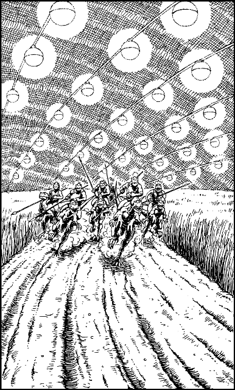

300
The stone ramp leads to a titanic, lantern-lit cavern, where acres of wheat and barley are ripening in fields of fertile soil. You are amazed that such rich arable land can exist so deep below the surface of Magnamund, where rain has never fallen and the sun has never shone. Truly the Goddess Ishir gave the Drodarin a wondrous gift when she bestowed upon them the Throne of Andarin, for its powers alone permit this miracle to exist.
You leave the ramp and follow a rutted cart track. It borders upon a field of tall wheat, swaying gently in a cooling breeze. As you walk along, you magnify your vision and attempt to judge the distance to the far wall of the cavern. You have just concluded that it lies more than two miles ahead when suddenly you see something in the middle distance that makes you freeze in your tracks. A group of six large, two-footed creatures have emerged from the wheat field. At first glance they remind you of the guanza, the racing lizards bred in the Southlands, but when you take a closer look you see that these grey-skinned mounts are not born of natural stock. Astride their scaly backs sit Shom’zaa minions armed with spears and lances. The leading rider sights you on the track and immediately the group comes speeding towards you with a loose, loping gait.

Pick a number from the Random Number Table.
If the number you have picked is 0–3, turn to 136.
If it is 4–9, turn to 225.